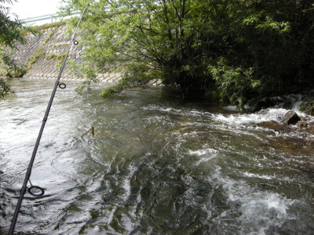
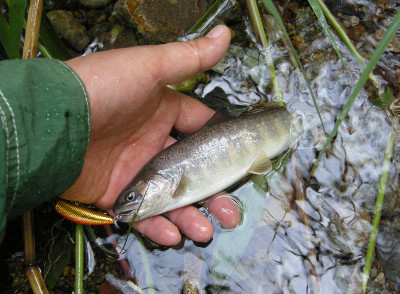
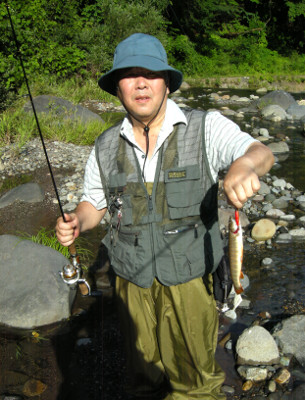

釣行日誌 故郷編
2015/07/25 叔父の実力を見せつけられる
夏至を過ぎ、心なしか夜が明けるのが遅くなった７月２５日、朝４時に叔父が迎えに来た。今日は今年度の初戦である。
高速を飛ばして４時間、高原のホテル前を朝８時に通過。いつもは右に曲がる三叉路を叔父は左に曲がる。
「あれ？ どこへ行くの？」
と僕が尋ねると、叔父は
「今日はちょっと違う沢を攻めてみる。前から行ってみたかった所だ。」
と言う。叔父の顔つきからして、かなり期待できそうな沢らしい。車はどんどんと標高を上げ、スキー場のリフトが見えるあたりで狭い林道に入った。そこから少し走ったところの空き地に叔父は車を停めた。
「さあ、着いたぞ。」
すぐそばに橋があったので、期待に胸をふくらませながら叔父と沢を覗き込む。
「あ～っ！ 淵が無い！」
叔父は大きな声を上げて驚き、残念そうに僕の顔を見た。眼下には、水量はそこそこあるが大石だらけで急峻な渓相が見える。
「この間下見をしたときには、いい淵があったんだけどなぁ....」
叔父の話では、春先に叔母と二人でドライブしていた時に偶然ここを通りかかり、今日と同じようにこの橋の上から見たら、すごい良い淵があったとのこと。これまでの大水で、渓相が一変し、岩だらけの河原になってしまったようだ。
「これじゃぁしかたがない。いつもの川へ行こう。」
叔父は気を取り直すようにそう言うと、戻って車に乗り込んだ。
だいぶ回り道をしたので、いつもおなじみの川に着いたときには朝９時を回っていた。下流から川に沿って走り、通称、「おじさんの淵」に車を停めた。なぜここを僕たちが「おじさんの淵」と呼んでいるかと言うと、もう４年ほど前、このポイントを叔父がルアーで攻めて爆釣した時に、すぐ前までそこで釣っていたと思われる先行者の餌釣りのおじさんが、道路の上からうらやましそうに眺めていたというエピソードがあったからだ。どうもその日は餌釣りは芳しくなかったようである。ここへ来るたびに叔父は、
「あのおじさんの顔が忘れられんなぁ。」
と笑う。

空き地に車を停め、いそいそと身支度をする。もう夏の盛りなので、今日はキウィスタイルでウェットウェーディングすることにした。タイツとショーツを穿き、ネオプレンの靴下を履いてからウェーディングシューズを履く。靴ひもをギュッと締めると心も引き締まり、戦闘態勢の出来上がりである。
「おじさんの淵」のアタマに流れ込んでいる沢に沿って藪の中を下り、川に立ちこむ。朝もやが立ち込める中、水の冷たさが足からビビッと伝わってくる。慎重に歩みを進め、キャスティングポジションに着く。このポイントは、いつも下流向きに釣ることにしている。淵の右岸側には、灌木が茂っており、その下の暗がりはいかにも岩魚の好みそうなスポットになっている。ミノーが枝に引っかからないよう注意して第一投。第二投。第三投。反応が無い。ちょっと筋が違うかな？と考え直し、もう少し右寄りを引っ張ってみる。沢の流れ込みを通過するあたりでブルブルッと竿先が震えた。
「キタっ！」
心地よい魚の脈動がロッドに伝わり、ココロを震わせる。今年の初物の岩魚だ。サイズは小さいが、良い体色をしている。そっと草むらに横たえ、写真を撮る。ああ、うれしい。しばし感動した後、丁寧にフックを外し、リリースする。夏の流れに魚影が帰って行った。

初物に気をよくして、次のポイントを狙う。淵の尻から瀬の流れへと続くあたりである。三日前に降った雨で、川の水はちょうどいい塩梅に増水している。川岸に生い茂った葦の根元あたりを通過するようにミノーを引いてくる。するとまた、プルプルッというアタリがあり、１尾目よりはやや小ぶりの岩魚が釣れた。
「今日は調子いいぞ！」
内心ニコニコとしながらさらに釣り下る。左岸から柳の木の枝が張りだしているポイントで、もう１尾。ロッドを立てて手元に寄せてくる時に、ふと気配がして振り返る。すると、上の道路脇から叔父がこちらを見ていた。
『調子いいよ！』
声は届かないので親指を立てて叔父に示す。叔父はにっこり笑って下流へと向かった。
100mほど釣り下り、丸木橋のあるポイントまで来た。両岸には葦が生え、流れの緩くなった岸辺には岩魚の好みそうな淀みと隠れ家がある。
『ここは出そうだな.....』
と思って得意のダイワ製ドクタミノーを振り込んでみるが、反応は無い。丸木橋の下流の小さな淵を攻めようかと歩みを進めると、下流からルアーが飛んできた。叔父が釣り上がって来たのだ。
「釣れたか？」
「うん、最初のポイントで３尾。あとは出ないね」
などと会話を交わし、丸木橋から道路へと戻り、叔父が車を停めていたバス停の所まで歩いて戻る。川の流れで冷たくなった体に、夏の日差しが心地よい。
最近は腰の痛みを訴えることが多くなった叔父の釣りは、昔のように長い区間を釣り上ることがなくなり、車から降りてすぐのポイントをあちこち拾って釣り歩くことが主流である。今日も車であちこちの釣り場を巡る。通称「公民館の堰堤」下では、昔とだいぶ渓相が変わり、落ち込みのただ中に堆積した土砂の上に灌木が生え、極めて釣りづらいポイントとなっている。水面近くまで被さっている茂みの下の白泡にミノーを打ち込み、枝に掛かるギリギリまでルアーを泳がせながら送り込み、アクションを付けながら上流に引き戻す。黒い影がフローティングミノー50mmに覆い被さってもいい所だが、反応が無い。ポジションを変えて、左岸側の流れ出しから下流に向けて振り込み、流れの筋に沿って引き戻してくると、深みから小ぶりな魚影がルアーを追ってくる。が、食いつくまでには至らず反転して戻っていった。
「ちぇっ.....」
ふと下流を見ると、この川にしては珍しく、同じルアー釣りのアングラーが釣り上ってくるのが見えた。邪魔をしては悪いので、釣り下るのをやめて車に戻る。叔父も釣れていないようだ。
今度は、小さな峠を越えて、向こうの部落の川に行ってみることとした。20分ほど車で走ると、部落の外れの堰堤までやってきた。橋詰めに車を停め、ロッドを取り出し、いそいそと降り場へ向かう。途中の畑には、イノシシ除けの電気柵がびっしりと張り巡らされている。堰堤脇の小道から河原へ降りるとすぐに護床ブロックが敷き詰められた落ち込みに出る。一番右岸側の落ち込みの中を探るがアタリは無い。とって返して叔父が攻めている本流の落ち込みを狙ってみると、カクンとロッドティップが引き込まれ、まずまずの岩魚が食いついた。叔父が５、６回引っ張った後で釣れたので、気分を良くして取り込む。
このポイントはその１尾だけに終わり、再び小道を上がって車へ戻る。もう昼近くになっていた。叔父と車の中でエアコンをかけ、弁当の時間にした。コンビニのおにぎりがとてもおいしい。運動は最高の調味料である。
その後、数キロに渡る区間を拾い釣りして歩き、夕方になったので、帰り道の途中にある本流の大堰堤を狙うことにして、車で移動した。幸い、このポイントには先行者の姿はなく、増水した流れが轟々と流れ落ちている。堰堤から取水されている用水に沿って上流へ歩き、落ち込みのすぐ下から釣り始める。水は笹濁り。絶好の条件だ。
幅40mくらいあるその堰堤の落ち込みは広く、先行して叔父がキャスティングを続けていく。大石の向こうで、叔父のロッドが引き込まれた。ぐいぐいと引く魚をいなしながら叔父がファイトを続ける。やがて上がって来たのは25cmほどの良型の岩魚であった。
『まぁ、叔父が先行していたのだから、釣れて当然だわな』
などと内心悔しい思いが頭をもたげたが、顔は笑って叔父に声をかける。
「いいのが釣れたねぇ！」
「おう！」
叔父も笑って岩魚をリリースした。
落ち込みを一通り探ると、今度は堰堤上のなだらかなトロ瀬を狙うことにして、叔父と二人遡行を進める。今度は僕が先行だ。トロ瀬の中には丸石が点在し、岩魚の潜めるポイントが上流まで連続していた。僕は遠くに見える流れ込みが気になって、やや早いペースで釣り上がっていた。対岸の岸辺までミノーを遠投し、流れに乗せてアクションを付けながらダウン・アンド・アクロスで引いてくる。すると下流で釣っていた叔父のロッドが大きくしなった。慌ててルアーを巻き上げ、小走りで駆け寄ると、叔父は満面の笑みを浮かべて良く太った岩魚を抜きあげた。

『ガーン！！』
流れ込みに気をとられて上流へ急いでいたら、いくつもある沈み石をねちっこく攻めていた叔父に逆転のホームランを打たれてしまった。
「石の陰を粘って攻めていると、そのうちに岩魚がしびれを切らして飛びつくぞ」
叔父は落ち着いた声でそう言うと、岩魚の大きさを手で測ってから水に戻してやった。27cmはありそうだった。
ひょっとしてオレは、誰にでも釣れるポイントでしか釣れないのか....深みに泳いでいく岩魚を見送りながら、一人で悔しがる。一度自分が攻めたポイントで、後から来た釣友に魚を釣り上げられることほど悔しいことは無い。しかもここは、数年前にも同じようなことがあったポイントなのだ。使っているルアーの差なのかとも思ったが、叔父が結んでいたのは僕と同じドクターミノー赤金の50mmであった。実力の差を思い知らされて、かなりへこんだが、気を取り直して流れ込みまで攻めていった。しかし、それ以降アタリは無く、本日の打ち止めとなった。
まだまだ自分は未熟だなぁと思い知らされた夏の夕暮れであった。
釣行日誌 故郷編 目次へ
サイトマップ
ホームへ
お問い合わせ